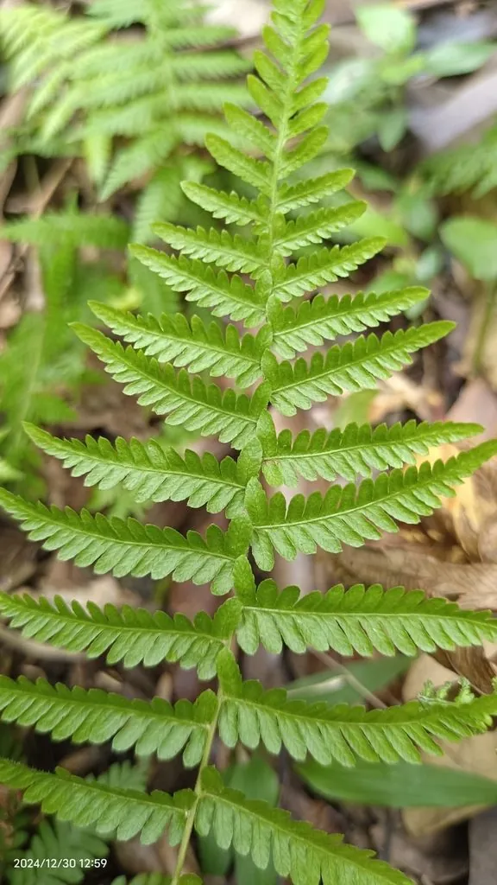

蕨类与裸子植物 · 植物界
金星蕨 Parathelypteris glanduligera

金星蕨的孢子囊群圆而金黄、散布叶背如星星，是南方林缘与灌丛中常见的蕨类，叶形秀丽，可用于观赏。
- 分类
- 门蕨类植物门纲水龙骨纲目水龙骨目科金星蕨科属金星蕨属
- 栖息环境
- 林缘、灌丛、溪边与阴湿山坡，喜温暖湿润半阴
- 地理分布
- 中国长江以南各地，东亚、东南亚也有分布
- 保护级别
- 暂无评估；野生种群常见
物种志
金星蕨是金星蕨科多年生蕨类，株高 0.3–0.8 m。根状茎横走，叶簇生或近生；叶片二回羽状深裂，轮廓披针形，草质，叶面绿色，叶背常有腺点。孢子囊群圆形，着生于侧脉上，成熟时金黄色或橙黄色，密布叶背，像撒落的金星，因此得名。
金星蕨喜温暖湿润、半阴环境，多生于林缘、灌丛、溪边与阴湿山坡，在南方丘陵地区很常见。它以孢子繁殖，根状茎可蔓延，常成片生长，是林下地被的良好材料。金星蕨叶形秀丽、孢子囊群颜色醒目，具有观赏价值，也可用于庭院阴湿处绿化。它的根状茎在民间有时作药用。金星蕨属种类较多，部分种类对生境要求较高，野外观察时应注意区分。
形态与习性
- 株高0.3–0.8 m
- 叶二回羽状深裂，轮廓披针形
- 孢子囊群圆形，成熟时金黄色
- 生境林缘、溪边与阴湿山坡
- 用途林下地被与阴湿处观赏
趣味知识
- 金星蕨的孢子囊群成熟时金黄醒目，像叶背撒了一层金星。
- 它喜欢阴湿环境，常见于南方林缘和溪边。
- 金星蕨叶形秀丽，可作林下地被和阴湿处绿化。